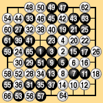
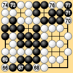
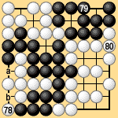
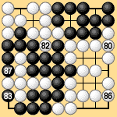
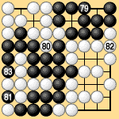

| 6.2 Final Ko (1) |
|---|
|
Our third example is the game already discussed in sections 3 and 4. Here we will reexamine this game because it contains some interesting rules problems. This game was played between Go Seigen and Miyamoto Naoki on a 9 x 9 board (Dia. 6-3-1). The game record states that the game ended when White connected the ko at 80 in Dia. 6-3-2. Black followed custom and added stones at 'a' and 'b' in Dia. 6-3-3 before counting, so Black won by four points. |
|  |  |  | |
| Dia. 6-3-1 (1 - 66) |
|
Dia. 6-3-3 (78 - 80) |
|---|
| Dia. 6-3-4 shows how this game would end under territory rules I. Black 81 passes. After White 82 and Black 83, White passes and Black also passes, establishing the preliminary end of the game. If White passed next he would have to give Black a prisoner. Equivalently, White can play 86 inside his own territory, as shown, forcing Black to capture at 87. Now White and Black both pass, ending the game. Black wins by five points, one more than by traditional rules. |
|  | |
|
|
Under area rules III, Black 81 passes, followed by White 82, Black 83, White 86, and Black 87 in Dia. 6-3-4. White and Black now both pass, ending the game. Black wins by five points. If we think about it, however, White's last move at 80 in Dia. 6-3-3 is a mistake. Referring to Dias. 6-3-3 and 6-3-4, suppose the game ended this way under area rules III: |
|
Black 79, White pass, Black 83, White 80, Black 87, White 82, Black pass, White pass (end of the game) Since White passed first the half-point rule applies and Black wins by only four points. Another possibility is: Black 79, White 82, Black 83, White 80, Black 87, White pass, Black pass, White pass (end of the game) The first pass was made by White after Black 87, so again the half-point rule applies and Black wins by only four points.As this example shows, there are situations in which the first pass is made for the sake of the half-point rule, so the end of the game must be defined by two consecutive passes after the first pass. The feature of area rules III is that the first pass is made to identify the last competitive move, not to identify the end of the game. After this pass, two consecutive passes signify that the players have agreed that the game is over. In the present example, depending on how White plays, the last competitive move under area rules III can come at Black 79 or at Black 87. White can also pass after Black 83, making that the last competitive move. Let's see some other ways this game can end under territory rules I. Referring to Dia. 6-3-5: Black 79, White 80, Black 81, White 82, Black 83, White pass, Black pass (preliminary end), White pass, Black pass (end of the game) Black wins by four points. Another possibility is: Black 79, White pass, Black pass (preliminary end), White 80, Black 81, White 82, Black 83, White pass (giving a prisoner), Black pass (giving a prisoner; end of the game) |
|  |
| Dia. 6-3-5 (79 - 83) |
|---|
|
Again Black wins by four points. The traditional, illogical rule that a direct ko must be eliminated at the end of the game forces Black to play 'a' and 'b' in Dia. 6-3-1 and lets White end the game by connecting at 80. Under area rules III or territory rules I the players must be a little more careful because such issues are settled by actual play. If White plays 80 in Dia. 6-3-1 immediately after Black 79, he loses a point. If the game is finished as in Dia. 6-3-5 the margin of victory is four points. This is the same as under traditional territory rules, but with the important difference that area rules III and territory rules I settle the final ko questions through natural moves. |